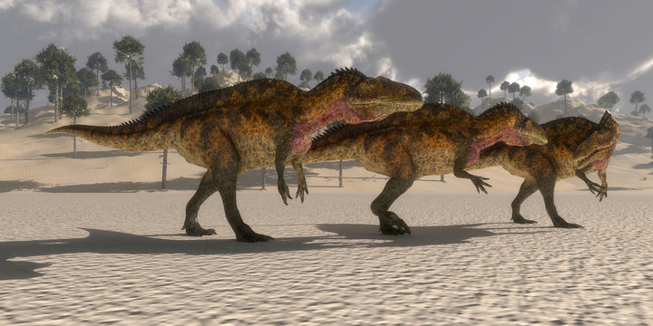
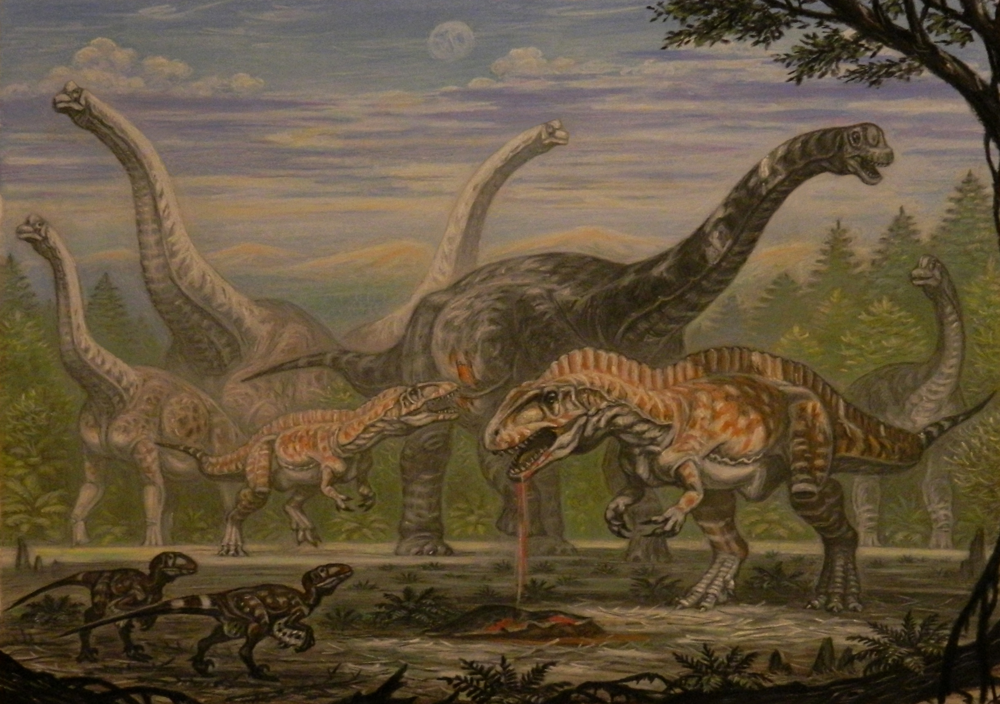
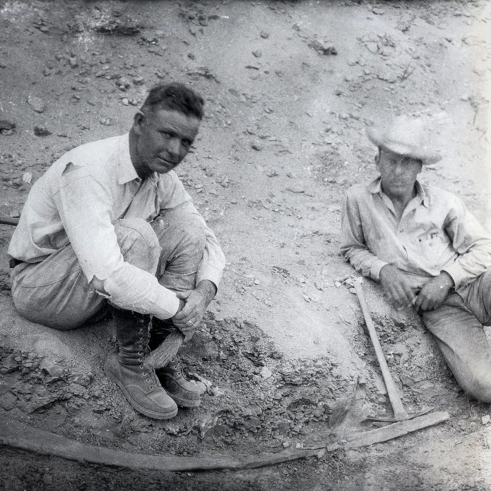

Habitat
Habitat
Acrocanthosaurus lived in many environments across what is now the United States, with fossils discovered in Oklahoma, Maryland, Texas, and Wyoming.
Discover the high-spined theropod that ruled North America for 25 million years.

Acrocanthosaurus lived in many environments across what is now the United States, with fossils discovered in Oklahoma, Maryland, Texas, and Wyoming.
Acrocanthosaurus lived in the Cretaceous period of the Mesozoic Era, approximately 125–99.6 million years ago.
Acrocanthosaurus means “high spined lizard”, named for its highly-set vertebrae which likely supported a ridge of muscle along its back.
Acrocanthosaurus was one of the top uncontested predators of its time. Growing up to about 38 feet long, it likely hunted large herbivorous dinosaurs, using its powerful jaws and sharp, serrated teeth to take down prey. As an apex predator, Acrocanthosaurus played a crucial role in maintaining balance within its environment.

Acrocanthosaurus was first discovered in 1940 in Oklahoma by paleontologist J. Willis Stovall. The original fossils were so large and unusual that they quickly drew scientific attention, leading to its official naming in 1950.

In addition to skeletal fossils, large three-toed footprints found in Texas may belong to Acrocanthosaurus. These trackways help scientists understand how it walked, how fast it moved, and how it interacted with its environment.